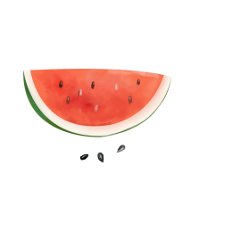
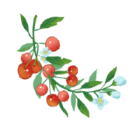

平凡的一天,也要活得热气腾腾。
我们要有最朴素的生活，与最遥远的梦想。即使明天天寒地冻，路远马亡。
这辈子，唯一拿得起放不下的是筷子。
当吃货挺好的，吃着吃着就忘了。好好在有酒有肉的日子，款待没心没肺的自己。
美食带给人的喜悦与时间无关，花四个小时做一顿大餐，和用四分钟做一碗美味的面，同样令人欢喜。
相濡以滋味，相忘于江湖，每一个制造和享用美食的人无不经历江湖夜雨，期待桃李春风。
世间情动，不过盛夏白瓷梅自汤，碎冰碰壁当啷响。
--一定要好好努力，才不辜负这个爱吃的胃，爱玩的心。
Meet you like the wind.
遇见你，温澜如风
 玊尔
玊尔